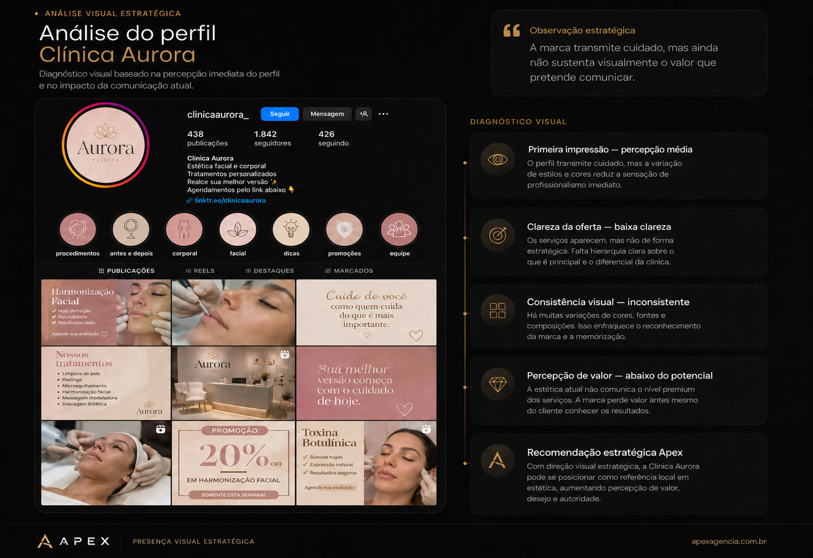
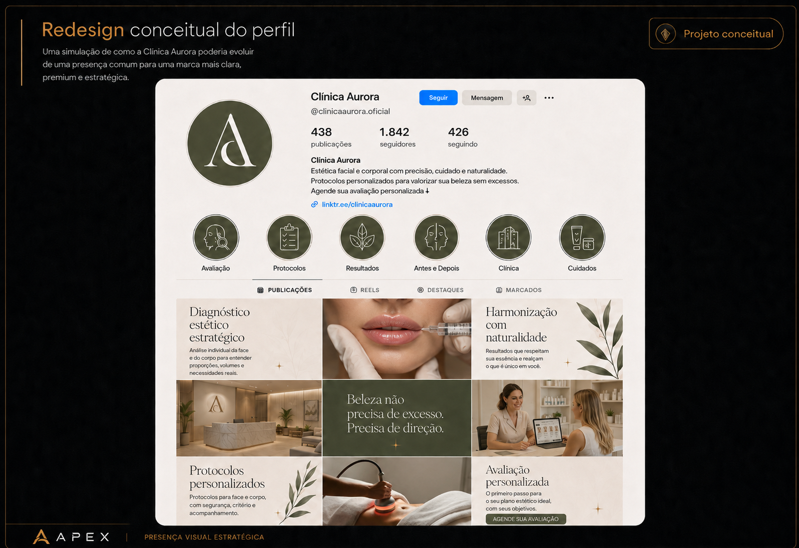

Menos confiança
O visitante percebe fragilidade antes de entender a qualidade real do serviço.
A Apex constrói presença visual estratégica para marcas que precisam parecer mais profissionais, confiáveis e valiosas antes mesmo do cliente pedir preço.
Antes do cliente comprar
ele percebe.
Quando a marca parece comum, desorganizada ou improvisada, o cliente tende a comparar por preço antes de perceber valor.
A presença visual não é detalhe. Ela influencia confiança, autoridade e decisão.
O visitante percebe fragilidade antes de entender a qualidade real do serviço.
Uma apresentação visual comum reduz a sensação de profissionalismo.
Quando a marca não sustenta valor, o cliente busca o menor custo.
A Análise Visual Estratégica identifica falhas de percepção, clareza, consistência e posicionamento visual no perfil da marca.
Não é uma opinião solta sobre estética. É uma leitura estratégica sobre como sua presença digital está sendo percebida antes do primeiro contato.
Solicitar minha análise visual
A partir do diagnóstico, a Apex mostra como uma presença visual pode evoluir com direção estratégica aplicada: bio, destaques, identidade, feed, hierarquia e percepção de valor.

Projeto conceitual demonstrativo. Redesign de identidade, perfil e presença visual faz parte dos serviços pagos da Apex.
A Apex trabalha a presença visual como ferramenta de percepção, clareza e valor. Cada decisão visual precisa cumprir uma função.
Identificamos onde a marca perde clareza, consistência e percepção de valor.
Definimos a linguagem visual mais adequada para o posicionamento da marca.
Organizamos identidade, perfil, destaques, feed, hierarquia e comunicação visual.
Criamos uma presença mais coerente, clara e reconhecível no digital.
A marca passa a comunicar mais profissionalismo antes da conversa comercial.
Diagnóstico da presença visual atual da marca, com leitura sobre percepção, clareza, autoridade e pontos que reduzem valor.
Reestruturação visual e estratégica do perfil para melhorar primeira impressão, bio, destaques, feed e percepção geral.
Criação ou refinamento da identidade visual para marcas que precisam parecer mais profissionais, consistentes e valiosas.
Planejamento e criação contínua de posts, stories, carrosséis e direção visual para manter a marca ativa, coerente e bem posicionada.
Definição de padrões visuais, linguagem gráfica, hierarquia e estética para fortalecer a comunicação da marca.
A questão é se ela está comunicando valor.
Solicitar análise visual